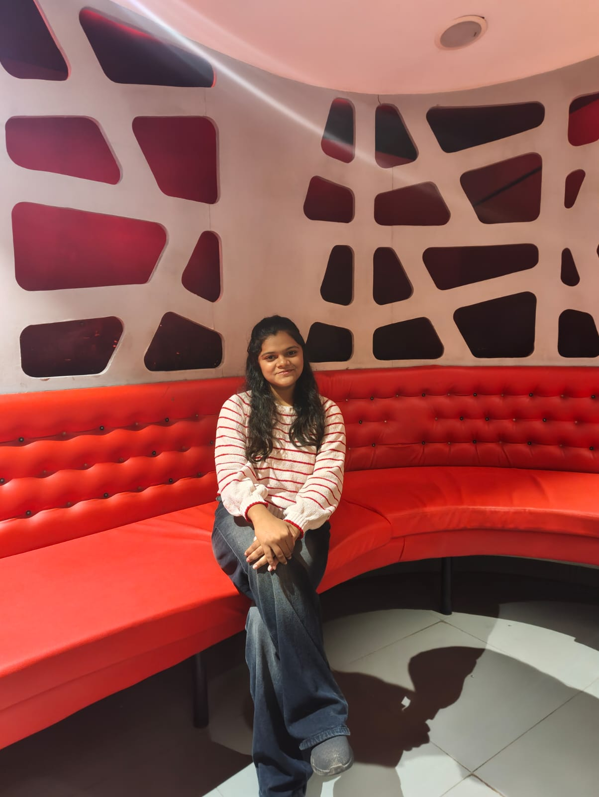

swaragharat008@gmail.com|phone: +91 9561367488
Adress:pune Maharashtra

Full name:Swara Santosh Gharat
DOB:02jun2008
Gender:female
To work in a challenging environment where I can utilize my skills and knowledge to contribute to the growth of the organization while continuously learning and developing professionally.
i am a dedicated and hardworking student with a strong passion for technology and innovation.i enjoysolving problems and staying updated with the latest trends in technology.
previous experience:no experience
| Qualification | Board/University | Year of Passing | Percentage/CGPA |
|---|---|---|---|
| SSC | Mumbai university | 2023 | 80% |
| HSC | Mumbai university | 2025 | 85% |
1. Personal Portfolio Website: Developed a responsive personal portfolio website using HTML, CSS, and JavaScript to showcase my skills and projects.
Technologies Used: HTML, CSS, JavaScript